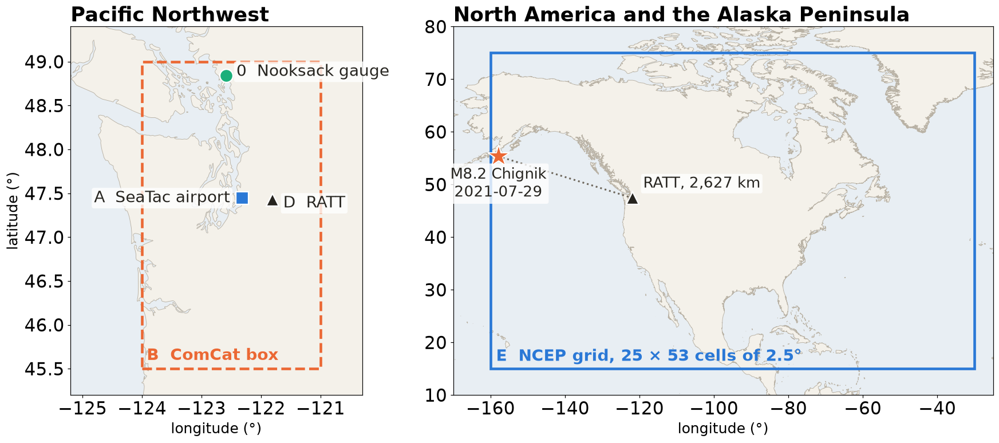

Session 7 · Wed Oct 14 · Lab notebook lab_s07_reading_data · Reading: book sections 2.7–2.8
📂
Five stations: a river gauge, a weather table and an earthquake catalog from the Pacific Northwest, a seismogram of an Alaska Peninsula earthquake recorded near Seattle, and a reanalysis grid over North America.
What does one number in each file mean, and can an agent read it as well as you can?
In class: the lab notebook lab_s07_reading_data.ipynb · Reading: 2.7 Statistical considerations · 2.8 Spectral transforms, with the companion slides
| Time | What |
|---|---|
| 10:00 | Pulse talks |
| 10:11 | What is this file? Five snippets, vote |
| 10:17 | Worked example: Nooksack River |
| 10:22 | Round 1, by hand: a table (A or B) |
| 10:40 | Round 2, by hand: an array (D or E) |
| 10:55 | Which moment, which spectrum |
| 10:59 | Round 3: an agent reads your table, then you verify |
| 11:13 | Key, computed live; scoreboard; exit |
0.47 SD
Higher exam scores, in standard deviations (SD), with active learning across 158 STEM studies; lecture-only students were 1.5 times as likely to fail.
Freeman et al. (2014), PNAS 111, 8410–8415, doi:10.1073/pnas.1319030111
33% and 45%
Narrower gaps in exam scores and pass rates for underrepresented students, only with high-intensity active learning.
Theobald et al. (2020), PNAS 117, 6476–6483, doi:10.1073/pnas.1916903117
Learned more, felt less
In a randomized physics trial, students in active sections learned more but rated their learning lower.
Deslauriers et al. (2019), PNAS 116, 19251–19257, doi:10.1073/pnas.1821936116
📍 In-situ sensor 🌤️ Atmosphere 🌡️ Atmospheric & climate science
date,TMAX,TMAX_M,TMAX_Q,TMAX_S,TMIN,TMIN_M,TMIN_Q,TMIN_S,PRCP,PRCP_M,PRCP_Q,PRCP_S,AWND,AWND_M,AWND_Q,AWND_S
1948-01-16,11,,,X,-22,,,X,0,T,,X,,,,
1975-01-12,83,,,0,-11,,,0,330,,,0,,,,
1975-01-13,61,,,0,39,,,0,297,,,0,,,,
1975-01-14,50,,,0,17,,,0,18,,,0,,,,Lines 1, 17 and 9,875 to 9,877 of the station A snapshot, unedited.
Vote: table or array? Which reader? Is the number you see the physical value?
🗂️ Catalog & compiled product 🪨 Solid Earth 📈 Seismology
time,latitude,longitude,depth,mag,magType,net,id
2003-06-01T06:03:14.170Z,47.4865,-122.7215,23.469,1.5,md,uw,uw10581508
2018-05-03T18:56:16.280Z,46.1983333,-122.1931667,-0.43,0.13,ml,uw,uw61384256Lines 1, 3,851 and 35,995 of the station B snapshot, unedited.
Vote: table or array? Which reader? Is the number you see the physical value?
📍 In-situ sensor 🪨 Solid Earth 📈 Seismology
00000000: 3030 3030 3031 4d20 5241 5454 2020 2048 000001M RATT H
00000010: 485a 5557 07e5 00d2 060f 0000 0000 1412 HZUW............
00000020: 0064 0001 0000 0002 0000 0000 0040 0030 .d...........@.0
00000030: 03e9 0038 0001 0000 03e8 0000 0b01 0c00 ...8............
>>> print(st)
1 Trace(s) in Stream:
UW.RATT..HHZ | 2021-07-29T06:15:00.000001Z - 2021-07-29T08:15:00.000001Z | 100.0 Hz, 720001 samplesxxd -l 64 of the station D waveform file (its first 64 bytes), then ObsPy’s summary of the same file.
Vote: table or array? Which reader? Is the number you see the physical value?
🖥️ Model & simulation 🌤️ Atmosphere 🌡️ Atmospheric & climate science
dimensions:
lat = 25 ;
time = 2920 ;
lon = 53 ;
variables:
float lat(lat) ;
short air(time, lat, lon) ;
air:units = "degK" ;
air:scale_factor = 0.01 ;
float lon(lon) ;Lines of ncdump -h on the station E file that describe the grid and the variable air, unedited; other attribute lines omitted.
Vote: table or array? Which reader? Is the number you see the physical value?
🗂️ Catalog & compiled product 🪨 Solid Earth 📈 Seismology
{"type":"Feature","properties":{"mag":8.2,"place":"2021 Chignik, Alaska Earthquake","time":1627539349188,
"geometry":{"type":"Point","coordinates":[-157.8876,55.3635,35]},"id":"ak0219neiszm"}The first 105 and the last 85 of the 162,483 characters of the station D event file, which is one line long; the middle is omitted, nothing is edited.
Vote: table or array? Which reader? Is the number you see the physical value?
📍 In-situ sensor 💧 Land water 💧 Hydrology & land-surface modeling
Predict. Discharge every 15 minutes for the 30 days of November. How many rows?
Observe. pd.read_csv(p).shape gives (2915, 5), not 2,880.
Explain.
1: product,time_local,tz,discharge_cfs,approval
2: instantaneous,2021-11-01 00:00,PDT,5310.0,A
582: instantaneous,2021-11-07 01:00,PDT,6460.0,A
583: instantaneous,2021-11-07 01:00,PST,6390.0,A
1477: instantaneous,2021-11-16 07:45,PST,55600.0,A
1478: instantaneous,2021-11-16 07:52,PST,56300.0,A
1479: instantaneous,2021-11-16 08:00,PST,55500.0,A
2887: daily_mean,2021-11-01,local day,4680.0,ALine number, then the exact line of the station 0 snapshot. USGS site 12213100, Nooksack River at Ferndale, WA; public domain.
2,880 + 30 + 4 + 1 = 2,915 rows; the peak, 56,300 cfs, is 1,594 m³/s.

| Seat block | Round 1, by hand (table) | Round 2, by hand (array) | Round 3, agent |
|---|---|---|---|
| 1, front left | A · GHCN-Daily SeaTac | D · RATT seismogram | A |
| 2, front right | A · GHCN-Daily SeaTac | E · NCEP air grid | A |
| 3, back left | B · ComCat Puget Sound | D · RATT seismogram | B |
| 4, back right | B · ComCat Puget Sound | E · NCEP air grid | B |
The notebook picks your agent prompt from the driver’s NetID: W-bare, the task only, or W-full, the task plus a context block (read the provenance record first, never clean a value).
17:00 🔒 By hand
git pull, your copy lab_s07_<netid>.ipynb open in book/Chapter2-DataManipulation/, the check cell printing 10 of 10 data files OK.stamp them, before any cell reads the file.card_A (or card_B) and run lab.check_card.| Card key | What you write |
|---|---|
data_model, reader, shape |
what one row is; the read call; rows × columns |
units, time_base |
each unit and the document that states it; zone, start, end, step |
missing_and_flags |
how many, how encoded, what each flag means |
physical_bounds, min_max_si |
bounds with a reason, before looking (revise only with what you saw); then min and max in SI and where |
real_or_error, question10 |
one surprising but real value, one error, each with a reason; your station’s question |
15:00 🔒 By hand
The figure and its numbers are shown in class at 10:55, after the by-hand rounds, and posted here after Friday’s session.
Which summer days count and which kurtosis definition you use move the SeaTac numbers; Mc and the bin width move the b-value.
The figure and its numbers are shown in class at 10:55, after the by-hand rounds, and posted here after Friday’s session.
The segment length sets what a Welch spectrum can resolve; the sampling step sets the shortest period a grid series can show.
7:00 🔍 Agent, then verify
DRIVER_NETID, MY_TABLE and RUN; hash the snapshots.mlgeo-book, never in MLGEO2026_UWNETID. In VS Code, close your notebook tab first. Paste the printed prompt exactly.agent_A.py and agent_A.json. UW Purple: set the chat mode, paste the printout, run its code yourself.agent_A_transcript.md."timeout"; that run still gets a scoreboard line.Answer yes or no, each with its evidence:
22 professional analysts checked AI-generated analyses in 52 workflows, 39 with errors; 44 of 52 followed the AI’s procedure and 25 of 52 inspected the data (Gu et al. 2024, CHI, section 6.1, doi:10.1145/3613904.3642497).
The answers appear only in the output projected at 11:13; these slides, the notebook and the checker hold none as text.
agent_* files until Friday.HW1 and the Chapter 1 quiz are due tonight 11:59 pm.
Friday: an agent on a planted copy of your array file, then register your table in your HW1 repository · Reading: 2.7 and 2.8 with the companion slides
ESS 469/569 · Machine Learning in the Geosciences · Autumn 2026